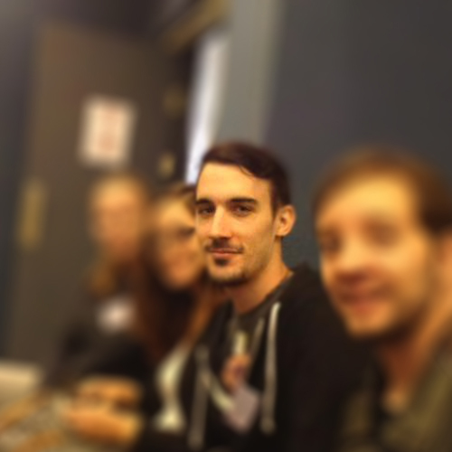

Quéhen Alexandre
Poste/mission : Apprenti ninja
Entreprise : Bioatousprix
Lieu : Poitiers
Contacter l'étudiantPoste/mission : Apprenti ninja
Entreprise : Bioatousprix
Lieu : Poitiers
Contacter l'étudiantPrivé
BIOATOUSPRIX
SARL (Société à responsabilité limitée)
Poitiers (86000)
Site spécialisé dans le commerce en ligne de produits cosmétiques bio made in France.
Du 4 mai au 4 juillet 2015.
Non.
Non.
J'ai passé la totalité de mon stage à étoffer le catalogue de fiches produits (plus de 3000 !)
Le site de produits bio était géré seul par un masseur qui s'est retrouvé débordé par la charge de travail que la gestion de ce site lui imposait. De ce fait, il avait besoin d'un stagiaire pour créer les nombreuses fiches de son catalogue et éventuellement pour optimiser le référencement.
L'objectif premier était de pouvoir élaborer la plus grande partie du catalogue du site.
Les tâches étaient répétitives et les contacts avec le responsable du stage peu nombreux.
Totale autonomie.
Clairement, non.
Il y avait bien trop de fiches à réaliser pour espérer terminer le catalogue dans les dates du stage, d'autant plus qu'au tiers du temps imparti, la sauvegarde des mille premières fiches s'est effacée suite à un changement d'hébergeur mal effectué.
Non.
Peu de communication, mais globalement, je n'ai pas été d'une grande utilité vu que la sauvegarde s'est effacée… ce qui a eu tendance à tendre les relations.
Au final, ma présence s'est révélée être peu utile car le travail que j'ai effectué a été perdu une première fois et je n'ai jamais retrouvé le rythme de création de fiche produit d'avant.
Il est primordial d'établir une relation de confiance avec les principaux interlocuteurs et prendre ses responsabilités en cas de litige ou de tensions.
Je pense qu'il n'y a rien que je ferais différemment, si ce n'est peut-être prévenir qu'un changement mal effectué d'hébergeur peut effacer des sauvegardes !
Le stage ne m'a pas vraiment apporté de nouveaux apprentissages que je suis susceptible de retrouver ailleurs.